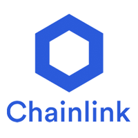
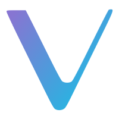

4 Méně Známé, Ale Moderní Kryptoměny Pro Vaše Investice
Cardano (ADA)

Cardano je významná kryptoměna a blockchainová platforma, která se zaměřuje na poskytování bezpečného a udržitelného prostředí pro vývoj decentralizovaných aplikací. Jeho vysoká úroveň bezpečnosti a důvěryhodnosti je důsledkem pečlivého výzkumu a formálního ověřování. S Cardanem můžete očekávat inovativní technologie a řešení pro problémy škálovatelnosti a interoperability.
Chainlink (LINK)
Chainlink je významný orákulární protokol, který propojuje blockchainové sítě s externími daty a službami. Tímto způsobem umožňuje smart kontraktům získat přístup k relevantním informacím mimo blockchain. Chainlink se snaží řešit důležitý "Oracle problem", který se týká důvěryhodnosti a integritě externích dat v blockchainu.
VeChain (VET)
VeChain je zajímavá blockchainová platforma, která se specializuje na sledování dodavatelského řetězce a zajištění autentičnosti a transparentnosti v podnikových aplikacích. Pomocí unikátních identifikátorů a technologie blockchainu umožňuje VeChain zaznamenávání a ověřování informací o produktech a jejich původu. Kromě toho nabízí možnosti odměňování uživatelů a podporuje vytváření vlastních tokenů.
Stellar (XLM)

Stellar je open-source platforma pro převody peněz, která usnadňuje rychlé a levné převody mezi různými měnami. Stellar se zaměřuje na financování a mikroplatební trhy a snaží se poskytovat finanční služby i lidem ve znevýhodněných oblastech. Jeho protokol umožňuje vytváření a výměnu tokenů a propojuje jednotlivé účastníky v síti bez centrálnej autority.